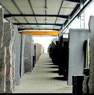
Steinlager
Über 70 Natursteinsorten zum Ansehen und Reservieren.
Zum Steinlager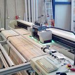
Digitalprint
Ihr eigenes Motiv auf der Glasrückfront.
Zum Digitalprint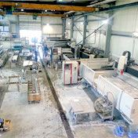
Produktion
Modernste Maschinen für millimetergenaue Arbeit.
Zur Produktion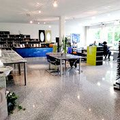
Ausstellung
Muster ansehen und mit nach Hause nehmen.
Zur AusstellungAusstellung
In unserem Ausstellungsraum können Sie sich ein Bild von den verschiedenen Verarbeitungsmöglichkeiten machen.
Außerdem können Sie sich von allen vorrätigen Materialien aus Stein, Glas, Silestone und Keramik ein passendes Muster für zu Hause mitnehmen. Mit diesem Muster können Sie vor Ort ausprobieren, ob das ausgewählte Material beispielsweise mit Ihrem Fußboden, Ihren Möbeln oder Ihren Wohn-Accessoires harmoniert.
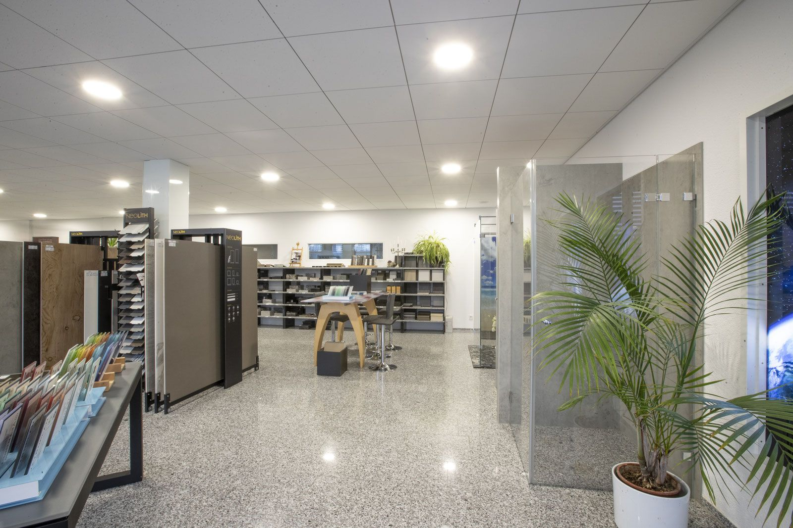
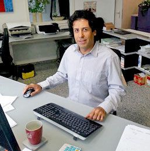
Ich bin Issa Sabokrouh, Ihr Kundenberater.
Wenn Sie uns besuchen möchten, um Ihr Bauvorhaben zu besprechen, würde ich mich sehr freuen, Sie hier begrüßen zu dürfen. Gerne nehme ich mir Zeit für Sie und Ihr Anliegen.
Um einen Termin zu vereinbaren, freue ich mich über Ihre Nachricht an issa-sabokrouh@natursteinwerk-baeder.de
Steinlager
An unserem Lagerplatz finden Sie über 70 unterschiedliche Natursteinsorten.
Weil Natursteine in ihrer natürlichen Farbgebung und Struktur immer schwanken, haben Sie hier die Möglichkeit, das von Ihnen gewünschte Material anzuschauen und für Ihre Küchenarbeitsplatte zu reservieren.
Falls Sie nicht die Möglichkeit haben, unser Lager zu besuchen, so können wir Ihnen vorab ein Bild der aktuellen Steincharge zukommen lassen.
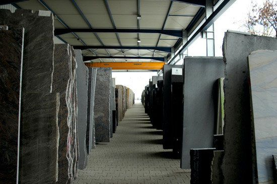
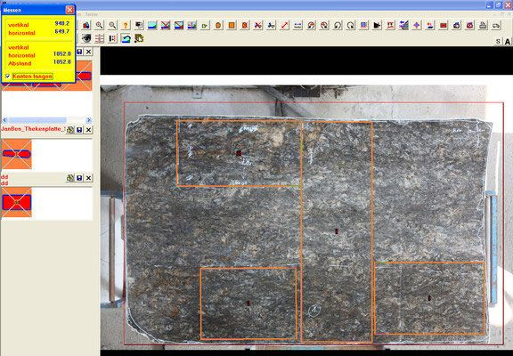
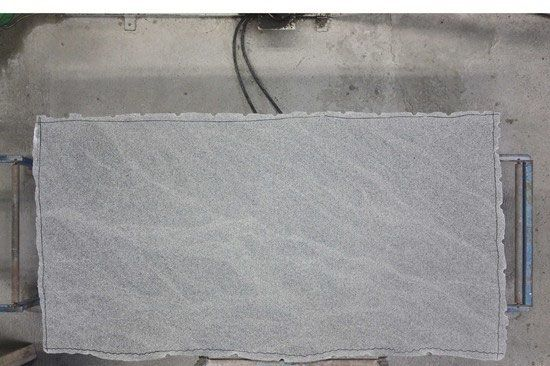
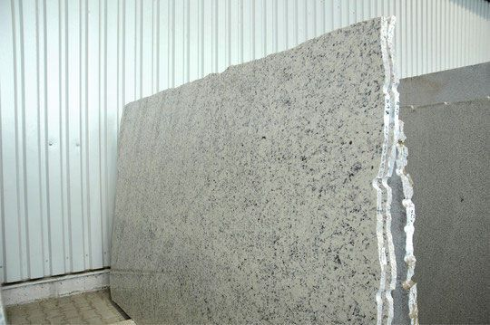
Produktion
Die Eberhard Bäder Natursteine und Glas GmbH und Co KG ist in ihren Produktionshallen mit den modernsten Maschinen ausgerüstet.
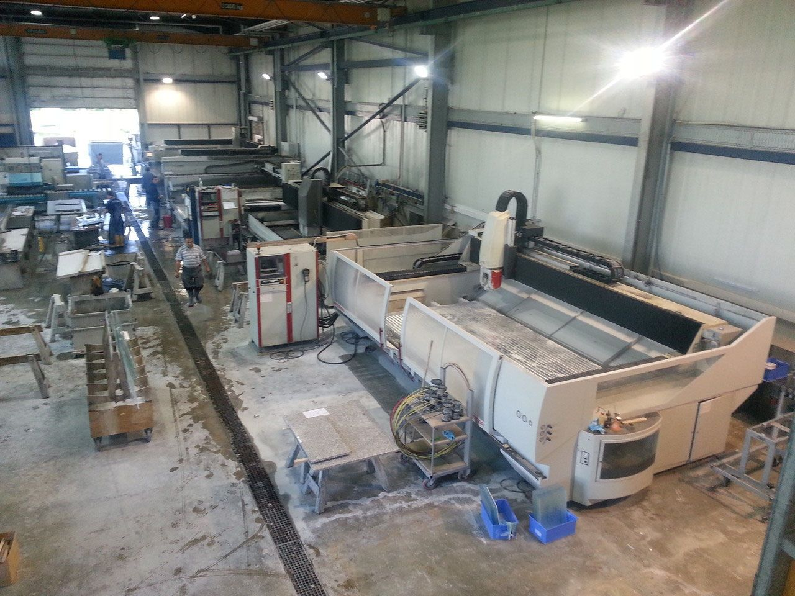
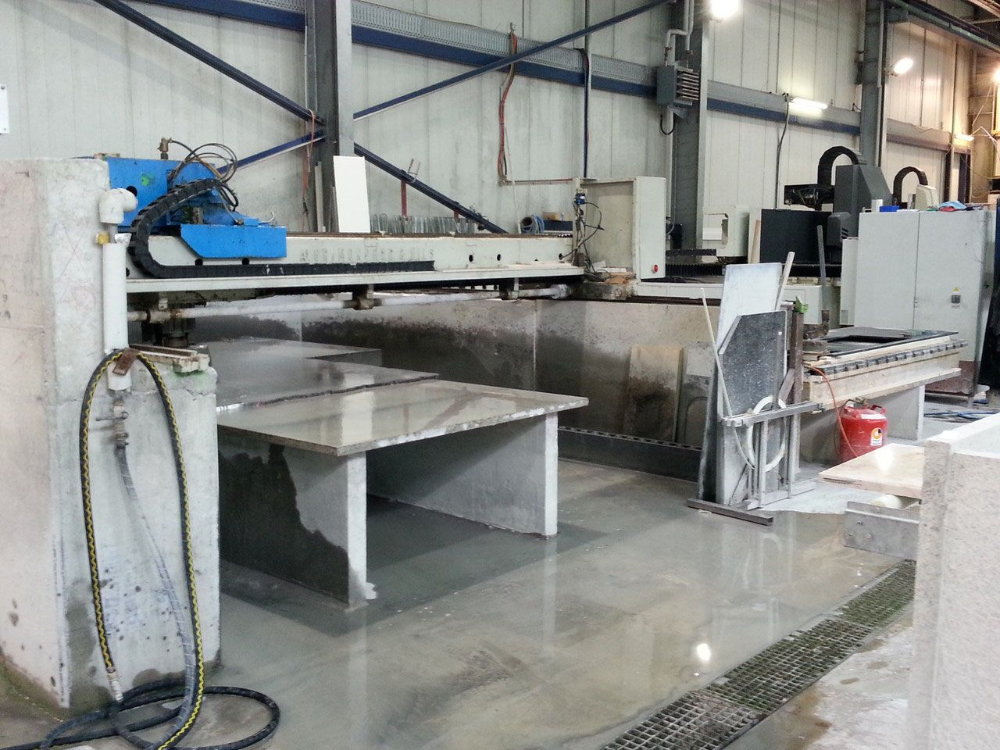
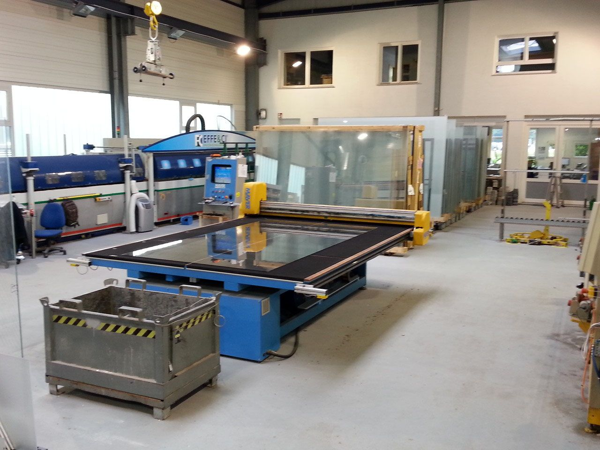
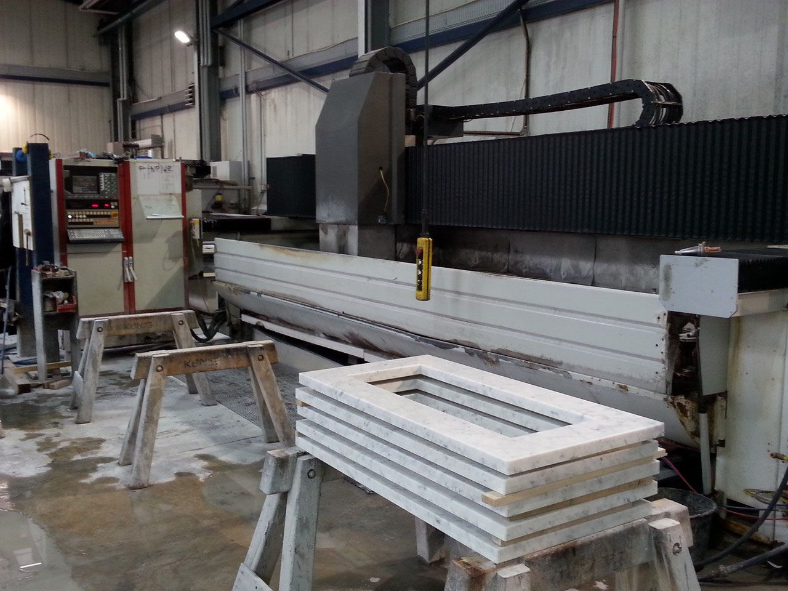
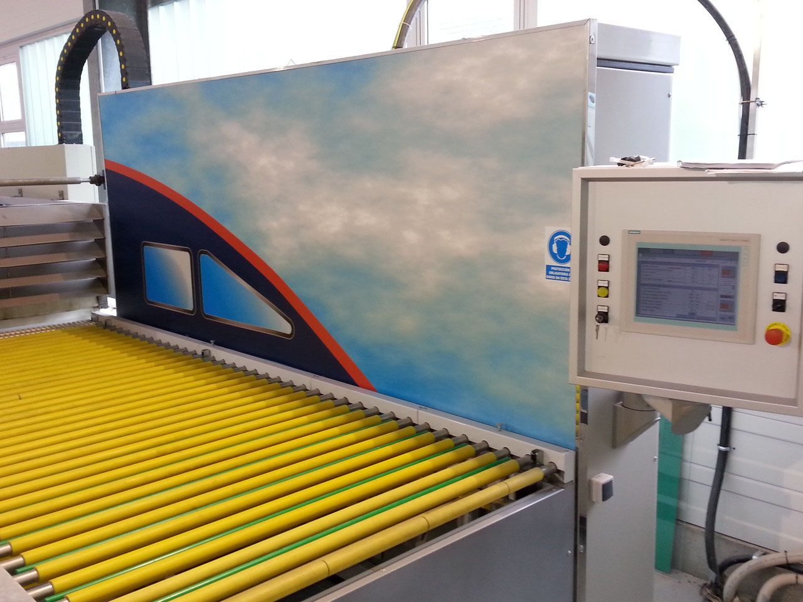
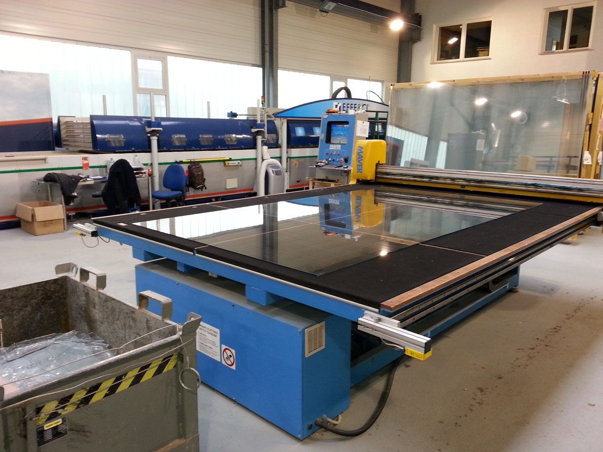
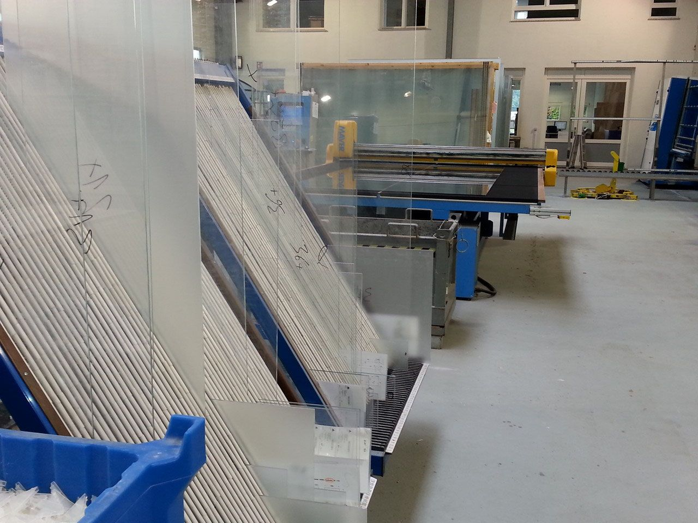
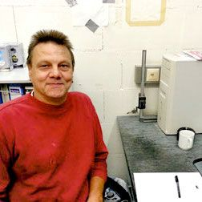
Guten Tag. Mein Name ist Manfred Feichter.
Ich leite die Produktion der Eberhard Bäder Natursteine und Glas GmbH & Co. KG. Zusammen mit meinem Team machen wir im Jahr mit unseren 4 CNC-Fräsen und unserer Wasserstrahl-Schneideanlage ca. 1.600 Küchenarbeitsplatten und ca. 2.700 Glasrückfrontenkommissionen. Wir produzieren mit modernster Technik Granitküchenarbeitsplatten und Glasrückfronten millimetergenau.
Digitalprint
Durch die Möglichkeiten im Digitalprint entstehen völlig neue und kreative Wege, um Glas zu bedrucken.
Sie möchten Ihre Nischenrückfront in keinem Standard-Uni-Farbton, sondern lieber mit einem individuellen Bild bedruckt? Dann finden Sie hier die richtige Auswahl. Wir können ein selbst gemachtes Bild von Ihnen verwenden oder ein Bild aus einer Bilddatenbank. Folgende Online-Agenturen können wir empfehlen: www.Pitopia.de, www.shutterstock.com
Mein Tipp:
Laden Sie sich am besten unseren Entwurfskatalog herunter und lassen Sie sich inspirieren. Einfach auf den Link klicken und schon kann’s losgehen:


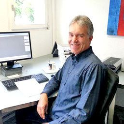
Ich bin Gerd Hofmann
und beantworte Ihnen gerne Fragen zum Digitalprint oder Ihre Anfrage. Schreiben Sie mir an gerd-hofmann@natursteinwerk-baeder.de. Gemeinsam mit Ihnen erarbeiten wir Ihre individuelle Digitalprint-Glasrückfront.
Lassen Sie sich beraten
Besuchen Sie unsere Ausstellung in Altbach oder rufen Sie uns an – wir beraten Sie gerne persönlich.